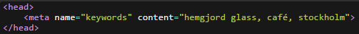
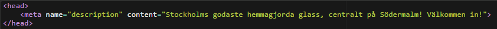

Exempel: Sida för ett glasscafé med hemgjord glass i Stockholm
Dålig titel: Glasscafé Stockholm
Bättre titel: Hemmagjord glass på Stockholms mysigaste café | Gelato.se
Beskrivande titel. Det är det första man ser.
Ha nyckelord i början.
Unik på varje sida och...
...skiljd från h1:an
Ger mera unikt innehåll och "större träffyta"
Håll kort. Cirka 30-65 tecken.
Meta-taggen

Definerar nyckelord för sökmotorer

Din sales-pitch. Det som ska dra ögat till siten. Om den saknas kan brödtext visas istället.
Använd unik på varje sida
Håll kort och snärtigt. Cirka tweet-längd.
H1
Grundläggande beskrivning av innehållet på sidan
Använd en per sida
Skilj från titel
Håll rimlig längd
Alt-taggar
Måste finnas för att sidan ska ses som "korrekt" HTML, vilket påverkar sidans ranking.
En bra text kan också hjälpa bilden att dyka upp i bildsökningar.
Hur ska man tänka då?
Tänk dig att du ska beskriva en bild via telefon. -"Ååh! Jag såg en bild av en vit nakenhund med vädjande blick idag. Den var såå söt!".
Stryk "Jag såg en bild av" och "Den var så söt!" och lämna "Vit nakenhund med vädjande blick". Det räcker!
Tumregler
En läsare talar om för användaren vad som är en bild och vad som är en länk. Så undvik:
Bild av...
Länk till...
Är bilden dekorativ, exempelvis som i laborationsuppgift 2.6 (bild till blogginlägg), strunta i bildtext.
Använd då alt="".
Håll texten under 150 tecken
Använd longdesc för längre beskrivningar
Tänk på att använda punkt
Se allt detta som en chans att skapa mera unikt material för din sida.